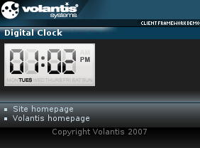

The Clock widget presents current time and date in a form of a digital clock. It can be periodically synchronized with an external source via AJAX requests. If the AJAX server is not specified, time from the local device is used. See also Clock with AJAX.

<widget:digital-clock id="myClock">
<widget:clock-content type="digit" value="0">
<object src="/images/clock/clockWidget_grey_0_r_01.mimg">0</object>
</widget:clock-content>
<widget:clock-content type="digit" value="1">
<object src="/images/clock/clockWidget_grey_1_r_01.mimg">1</object>
</widget:clock-content>
...
<widget:clock-content type="separator" value="1">
<object src="/images/clock/cell_5_11x37.mimg">:</object>
</widget:clock-content>
<widget:clock-content type="separator" value="2">
<object src="/images/clock/clockWidget_grey_null_r_01.mimg"/>
</widget:clock-content>
<widget:clock-content type="separator" value="3">
<object src="/images/clock/clockWidget_grey_pause_r_01.mimg"/>
</widget:clock-content>
<widget:clock-content type="ampm" value="am">
<object src="/images/clock/clockWidget_grey_am_r_01.mimg">AM</object>
</widget:clock-content>
<widget:clock-content type="ampm" value="pm">
<object src="/images/clock/clockWidget_grey_pm_r_01.mimg">PM</object>
</widget:clock-content>
</widget:digital-clock>| Type | Value |
|---|---|
| digit | Numbers from 0 to 9 |
| day | Numbers from 1 (Sunday) to 7 (Saturday) |
| month | Numbers from 1 (January) to 12 (December) |
| ampm | am or pm |
| separator | Numbers from 1 (the first separator) to n (the last separator) |
| Parameter | Description |
|---|---|
| %Y | A full, 4 digits, numerical representation of a year |
| %y | A two digits representation of a year |
| %F | A full textual representation of a month, for example January or February. |
| %m | Numerical representation of a month, with leading zero |
| %D | A textual representation of a day |
| %d | Day of the month from 01 to 31, i.e. 2 digits with a leading zero |
| %h | 12-hour format of an hour with a leading zero |
| %H | 24-hour format of an hour with a leading zero |
| %i | Minutes with a leading zero |
| %s | Seconds with a leading zero |
| %S | Milliseconds with a leading zero |
| %A | Ante Meridiem and Post Meridiem indicator |
| %1, %[n] | First and n-th separator |
<style type="text/css" media="handheld,all">
#myClock {
mcs-datetime-format: '%h%1%i%A'
}
</style>
<?xml version="1.0" encoding="UTF-8"?>
<html xmlns="http://www.w3.org/2002/06/xhtml2"
xmlns:mcs="http://www.volantis.com/xmlns/2006/01/xdime/mcs"
xmlns:template="http://www.volantis.com/xmlns/marlin-template"
xmlns:widget="http://www.volantis.com/xmlns/2006/05/widget">
<head>
<title>Digital Clock Widget</title>
<link rel="mcs:theme" href="/themes/main.mthm"/>
<link rel="mcs:layout" href="/layouts/main.mlyt"/>
<style type="text/css" media="handheld,all">
#myClock {
mcs-datetime-format: '%h%1%i%A'
}
#myClockDoW {
mcs-datetime-format: '%D'
}
.top {
vertical-align: top;
}
</style>
</head>
<body>
<template:apply href="templates/demo-main.xdtpl">
<template:binding name="title" value="Digital Clock"/>
<template:binding name="content">
<template:complexValue>
<div style="width: 128px; height: 60px; position: relative">
<div style="width: 128px; height: 7px; position: absolute;
top: 0px; left: 0px;">
<object src="/images/clock/cell_1_128x7.mimg" class="top"/>
</div>
<div style="width: 7px; height: 37px; position: absolute;
top: 7px; left: 0px">
<object src="/images/clock/cell_2_7x37.mimg"/>
</div>
<div style="width: 115px; height: 37px; position: absolute;
top: 7px; left: 7px">
<widget:digital-clock id="myClock">
<widget:clock-content type="digit" value="0">
<object src="/images/clock/clockWidget_grey_0_r_01.mimg">0</object>
</widget:clock-content>
<widget:clock-content type="digit" value="1">
<object src="/images/clock/clockWidget_grey_1_r_01.mimg">1</object>
</widget:clock-content>
<widget:clock-content type="digit" value="2">
<object src="/images/clock/clockWidget_grey_2_r_01.mimg">2</object>
</widget:clock-content>
<widget:clock-content type="digit" value="3">
<object src="/images/clock/clockWidget_grey_3_r_01.mimg">3</object>
</widget:clock-content>
<widget:clock-content type="digit" value="4">
<object src="/images/clock/clockWidget_grey_4_r_01.mimg">4</object>
</widget:clock-content>
<widget:clock-content type="digit" value="5">
<object src="/images/clock/clockWidget_grey_5_r_01.mimg">5</object>
</widget:clock-content>
<widget:clock-content type="digit" value="6">
<object src="/images/clock/clockWidget_grey_6_r_01.mimg">6</object>
</widget:clock-content>
<widget:clock-content type="digit" value="7">
<object src="/images/clock/clockWidget_grey_7_r_01.mimg">7</object>
</widget:clock-content>
<widget:clock-content type="digit" value="8">
<object src="/images/clock/clockWidget_grey_8_r_01.mimg">8</object>
</widget:clock-content>
<widget:clock-content type="digit" value="9">
<object src="/images/clock/clockWidget_grey_9_r_01.mimg">9</object>
</widget:clock-content>
<widget:clock-content type="separator" value="1">
<object src="/images/clock/cell_5_11x37.mimg">:</object>
</widget:clock-content>
<widget:clock-content type="separator" value="2">
<object src="/images/clock/clockWidget_grey_null_r_01.mimg"> </object>
</widget:clock-content>
<widget:clock-content type="separator" value="3">
<object src="/images/clock/clockWidget_grey_pause_r_01.mimg"> </object>
</widget:clock-content>
<widget:clock-content type="ampm" value="am">
<object src="/images/clock/clockWidget_grey_am_r_01.mimg">AM</object>
</widget:clock-content>
<widget:clock-content type="ampm" value="pm">
<object src="/images/clock/clockWidget_grey_pm_r_01.mimg">PM</object>
</widget:clock-content>
</widget:digital-clock>
</div>
<div style="width: 6px; height: 37px; position: absolute;
top: 7px; left: 122px">
<object src="/images/clock/cell_9_6x37.mimg" class="top"/>
</div>
<div style="width: 128px; height: 4px; position: absolute;
top: 44px; left: 0px">
<object src="/images/clock/cell_10_128x4.mimg" class="top"/>
</div>
<div style="width: 128px; height: 7px; position: absolute;
top: 48px; left: 0px">
<widget:digital-clock id="myClockDoW">
<widget:clock-content type="day" value="1">
<object src="/images/clock/clockWidget_grey_sun_r_01.mimg"
class="top">Sun</object>
</widget:clock-content>
<widget:clock-content type="day" value="2">
<object src="/images/clock/clockWidget_grey_mon_r_01.mimg"
class="top">Mon</object>
</widget:clock-content>
<widget:clock-content type="day" value="3">
<object src="/images/clock/clockWidget_grey_tues_r_01.mimg"
class="top">Tue</object>
</widget:clock-content>
<widget:clock-content type="day" value="4">
<object src="/images/clock/clockWidget_grey_wed_r_01.mimg"
class="top">Wed</object>
</widget:clock-content>
<widget:clock-content type="day" value="5">
<object src="/images/clock/clockWidget_grey_thurs_r_01.mimg"
class="top">Thu</object>
</widget:clock-content>
<widget:clock-content type="day" value="6">
<object src="/images/clock/clockWidget_grey_fri_r_01.mimg"
class="top">Fri</object>
</widget:clock-content>
<widget:clock-content type="day" value="7">
<object src="/images/clock/clockWidget_grey_sat_r_01.mimg"
class="top">Sat</object>
</widget:clock-content>
</widget:digital-clock>
</div>
<div style="width: 128px; height: 5px; position: absolute;
top: 55px; left: 0px">
<object src="/images/clock/cell_12_128x5.mimg" class="top"/>
</div>
</div>
</template:complexValue>
</template:binding>
</template:apply>
</body>
</html>
| Name | Purpose |
|---|---|
| div | A section used to add extra structure to documents. Style sheets can be used to control the presentation. |
| object | A reference to a media resource. Object allows a variety of media resources to be placed on the rendered page. The resource may be specified as an image policy or a device depended mime type. Object also allows the control of media transcoding to ensure the resource will render on the requesting agent. See References to media for details. |
| widget:clock-content | Defines a markup for the clock digits, separators, AM/PM indicators, as well as the day and month names. It can contain any markup, in particular text and images. |
| widget:digital-clock | Defines a digital clock. |
| Core attributes | Attributes that are common to XDIME 2 elements. |